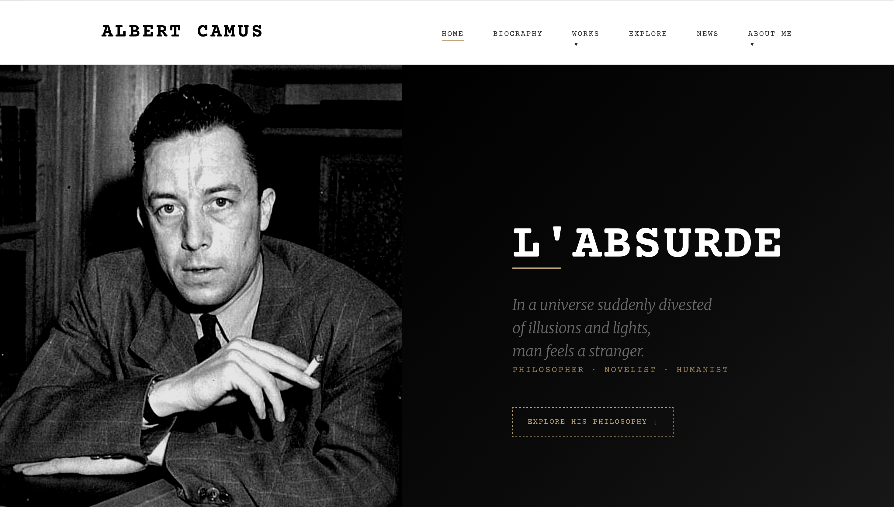
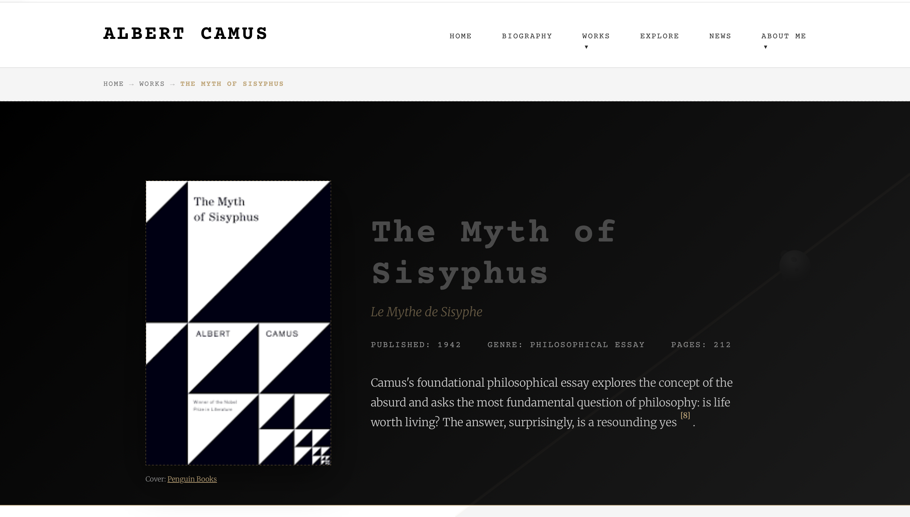
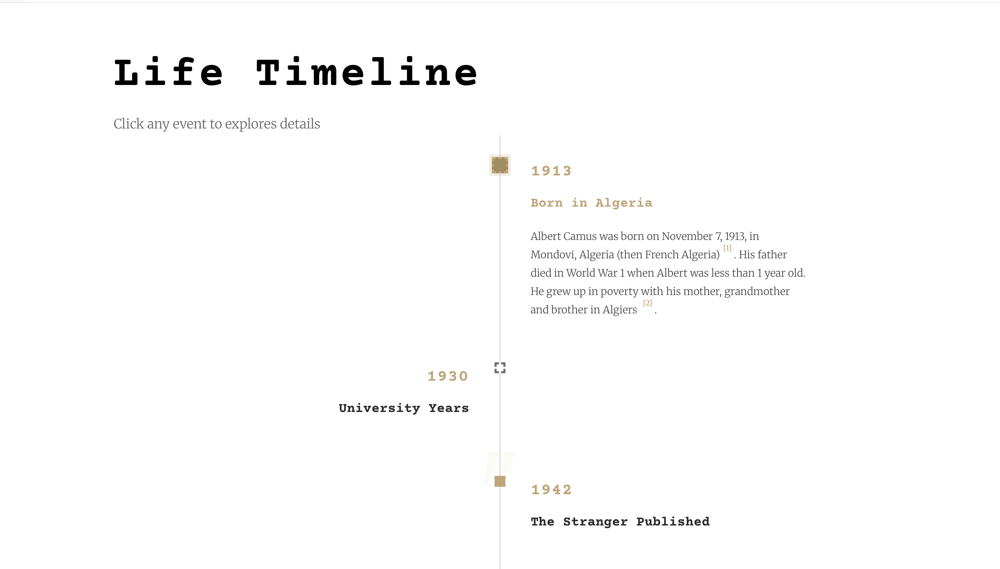
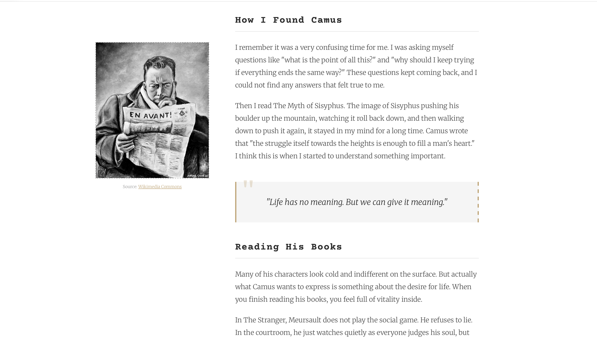

This tribute page was built as a Web Authoring assignment to create a multi-page informational website. I chose Albert Camus because his work sits at the intersection of literature, philosophy, and politics.
The site covers Camus's biography, his major works like The Myth of Sisyphus, and key philosophical themes. My goal was to transform complex existentialist ideas into a clear and engaging digital experience. I used interactive storytelling techniques and vanilla JavaScript to introduce users to his concept of "The Absurd" without overwhelming them with heavy text.




I wanted the design to reflect the serious and intellectual tone of Camus's work. I started with a strong black-and-white hero photograph of Camus. Based on that image, I developed a simple color palette using deep black, off-white, and a warm gold to add an archival and classic feel.
Typography played a major role in the design. I paired classic serif fonts for the main content with monospace fonts for dates and labels. This combination makes the website feel like a serious literary document while keeping the information highly organized.
Since Camus often wrote about silence and empty spaces, I used whitespace as my primary layout tool. I made sure every section had enough room to breathe, avoiding dense layouts that would contradict the philosophical subject matter.
I built this project using HTML5, CSS3, and vanilla JavaScript. My main focus was on creating interactive front-end features without relying on external animation libraries like jQuery or GSAP. This approach kept the website lightweight and forced me to deeply understand DOM manipulation.
The entry sequence on the landing page is driven by custom JavaScript. Coordinating the text reveal effects required precise timing and state management. I also implemented a "skip animation" logic for returning users. I created event listeners that detect keyboard presses or screen clicks, allowing the user to bypass the timed sequence smoothly.
Interactive elements across the site, such as the smooth-scrolling "Back to Top" feature on the Sisyphus essay page and the active state tracking for the navigation menu, were all engineered from scratch. Handling these asynchronous events cleanly was difficult but highly rewarding.
Responsive layout was handled by CSS Grid and Flexbox. While JavaScript manages the interactivity, I ensured the structural foundation of the website remained solid and adaptable across all screen sizes using modern CSS techniques.